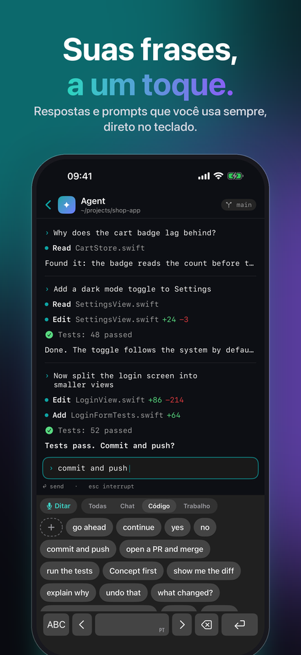
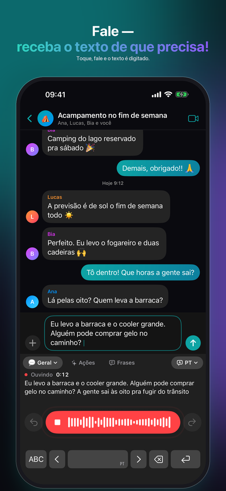
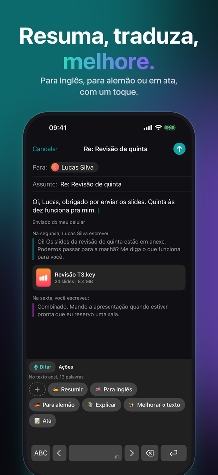
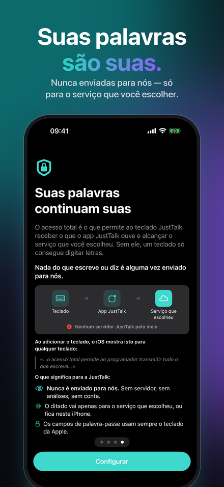
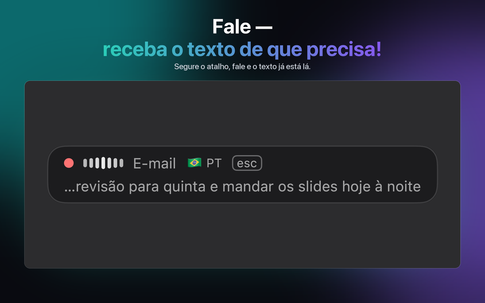
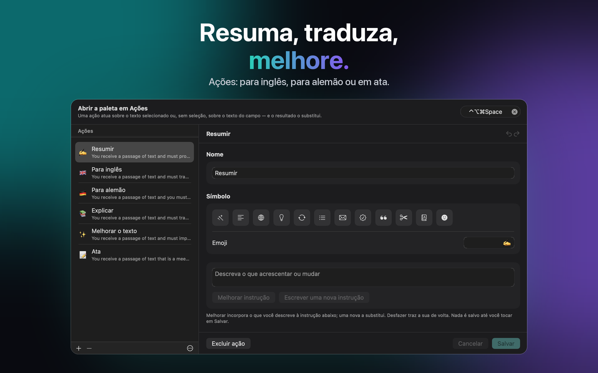
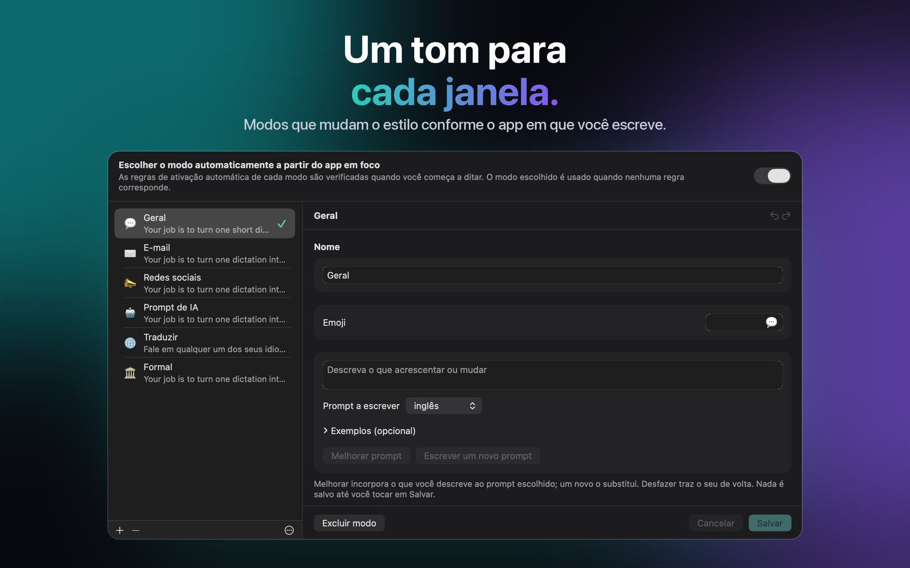

Para Mac, Windows, iPhone e iPad
Voz em texto e transcrição IA
Você fala. Ele escreve. O JustTalk é voz em texto para o seu Mac: fale em qualquer app e a transcrição sai pronta, polida por IA.



Suas palavras são suas

Nada do que você digita ou fala é enviado para nós.
No iPhone e no iPad, o teclado pede acesso total. O acesso total é o que permite ao teclado JustTalk receber o que o app JustTalk ouve e alcançar o serviço que você escolheu. Sem ele, um teclado só consegue digitar letras.
- Nunca enviado para nós. Sem servidor, sem análises, sem conta.
- O ditado vai apenas para o serviço que você escolheu, ou fica no seu aparelho.
- Os campos de senha usam sempre o teclado da Apple.
Confira você mesmo: no iPhone, Ajustes → Privacidade e Segurança → Relatório de Privacidade dos Apps — e no JustTalk, Definições → Privacidade → O que saiu do seu iPhone, um registro de cada solicitação sem nenhuma das suas palavras.
Obter o JustTalk
O mesmo app em todas as plataformas, com os mesmos modos, os mesmos idiomas e a mesma escolha entre local e nuvem. Cada um é comprado uma vez na sua própria loja: a App Store para Mac, iPhone e iPad, a Microsoft Store para Windows. No Mac, iPhone e iPad, o iCloud mantém seus modos, frases, ações e ajustes iguais; o Windows participa pelo arquivo de configuração.
macOS
macOS 14 ou posterior, Apple silicon ou Intel. Dita em qualquer aplicação com um atalho.
Windows
Windows 10 (1809) ou posterior, x64, x86 ou ARM64. O instalador é um MSIX assinado.
iPhone & iPad
iOS e iPadOS 26 ou posterior. Um teclado a partir do qual ditas em qualquer aplicação, e uma folha de partilha para gravações que já tens.
O que ele faz
Um app de ditado normalmente te entrega uma transcrição bruta e deixa a revisão por sua conta. O JustTalk termina o trabalho: aperte um atalho, fale, e a frase já revisada é colada no app em que você já está — sem janela para trocar, sem nada para copiar na mão.
Escrito, não só transcrito
Um modelo de linguagem tira os "é"s e corrige a pontuação. O que chega no campo é algo que você mesmo teria digitado.
Local ou nuvem, tu decides
O Whisper e um modelo local correm inteiramente no teu próprio computador, grátis e offline. Ou liga a Google, OpenAI, Groq, Mistral ou Anthropic com a tua própria chave e paga-lhes diretamente.
100 idiomas
Detectados enquanto você fala, até no meio de uma frase. Nenhuma configuração para mudar quando você troca de idioma.



Quanto custa
O app é um pagamento único. Os modelos são de graça se você rodar localmente, e no modelo de pagar-conforme-usa se você usar um provedor na nuvem — cobrado por eles, não por nós. Dez minutos de ditado por dia no Groq ficam bem abaixo de um dólar por mês, nos preços deles de setembro de 2026; um dia pesado de 45 minutos fica em torno de um a três dólares. Tudo fica desbloqueado por sete dias, sem nada reservado e sem precisar de cartão.
Depois do teste, a versão gratuita continua funcionando todos os dias com 2 ditados de até 30 caracteres cada, 5 frases, 5 ações e, no iPhone e iPad, 5 correções de digitação. O JustTalk Pro deixa tudo ilimitado com um pagamento único — com um serviço de IA na nuvem, o uso passa a ser limitado só pelo seu acesso a esse serviço. Não é assinatura, e não há nada para cancelar.
Novidades no iPhone e iPad
Privado, Rápido ou Melhor
Uma escolha define como o JustTalk ouve e escreve: tudo no iPhone, ou um serviço na nuvem mais rápido com a sua chave, com o custo por mês.
Sugestões ao digitar
Sugestões de palavras acima das letras, e «Corrigir o que digito» arruma os erros quando você pausa — nunca a sua redação.
Lembra suas palavras
Corrija um nome uma vez e o JustTalk oferece lembrá-lo: na próxima, sai certo.
Funciona offline
Se a conexão cair no meio do ditado, o reconhecimento do próprio iPhone assume e nada se perde.
Comece de qualquer lugar
Inicie uma sessão pelo botão de Ação, pela Central de Controle ou pelo Toque Traseiro, sem abrir o app.
Último ditado
Trocou de app e o texto não chegou? Um toque digita seu último ditado de novo.
Como as pessoas usam
E-mail e chat
General cuida do dia a dia; os outros modos têm tom e vocabulário próprios, e o certo pode ser escolhido automaticamente conforme o app em que você está ditando.
Reuniões
Capture os dois lados de uma chamada e receba a transcrição da conversa inteira, não só da sua metade.
Frases e Ações
O que você escreve sempre está a um toque, no teclado do iPhone e na paleta do computador. Uma Ação reescreve a seleção, ou o campo inteiro, com uma instrução que você escreve — ou que o modelo escreve.
Gravações
Um memorando de voz, uma aula, uma entrevista: abra ou compartilhe com o JustTalk e receba a transcrição, em todas as plataformas.
Local ou na nuvem — você decide, e a gente diz quanto cada um custa
O JustTalk é o app em volta dos modelos, não os modelos. Rode-os localmente — no aparelho, ou num computador com Whisper e llama.cpp, Ollama ou LM Studio — e nada é enviado, nada é cobrado. Ou conecte um provedor na nuvem com uma chave criada por você: mais rápido e preciso, e ele cobra você diretamente. A política de privacidade diz exatamente o que cada opção envia, e a declaração sobre IA qual IA faz o quê.
Dite em 100 idiomas, incluindo inglês, alemão, francês, espanhol, italiano, português, japonês, coreano, grego, ucraniano e russo.
JustTalk
Grátis para experimentar, desbloqueado com uma única compra. Mac, Windows, iPhone e iPad, 100 idiomas, e nada é enviado a não ser que peças.